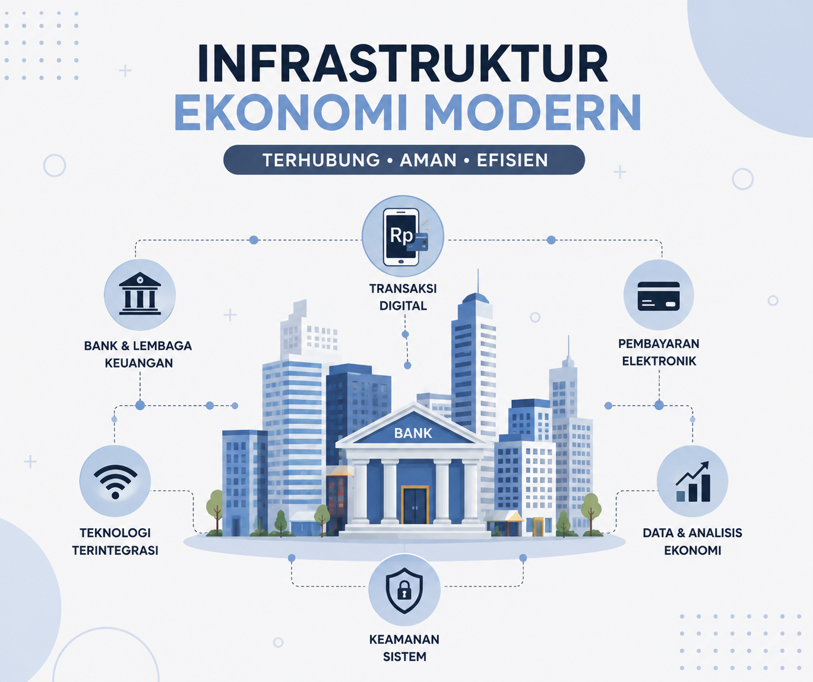

Memahami Ekosistem Digital
Pelajari bagaimana Rupiah Digital akan mengubah cara kita berinteraksi dengan nilai dan aset di era Web 3.0.
Apa itu CBDC?
Central Bank Digital Currency adalah representasi digital dari mata uang fiat negara yang diterbitkan dan diatur oleh Bank Sentral. Berbeda dengan kripto, CBDC memiliki nilai yang stabil dan jaminan hukum penuh.
Manfaat Rupiah Digital!
- Efisiensi Pembayaran Real-time
- Pengurangan Biaya Cetak
- Inklusi Keuangan Nasional
- Keamanan Transaksi Tinggi
Masa Depan Pembayaran
Bayangkan dunia di mana transaksi lintas batas terjadi dalam hitungan detik tanpa perantara yang mahal. Rupiah Digital menjadi fondasi bagi ekonomi terprogram (programmable money) yang mendukung smart contracts dan otomatisasi keuangan.

Rupiah Digital bukan sekadar pengganti uang kertas, melainkan infrastruktur baru untuk inovasi finansial di Indonesia.
Alur Kerja Digital
Implementasi Rupiah Digital dilakukan melalui tiga pilar utama: desain fungsional, teknologi platform, dan integrasi ekosistem. Bank Indonesia bertindak sebagai otoritas tunggal yang menjamin ketersediaan dan keamanan aset tersebut.